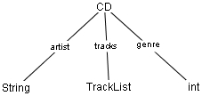

|
toc |
install |
usage |
language |
examples |
ref |
api
|
Extending the 3 basic data types classgen offers enumerations, attributes and methods.
Enumerations are described best with an example. In our CD example we can use an enumeration to store the genre of a CD. We redefine the CD record as follows.
CD::= String:artist
TrackList:tracks
"int":genre
GenreConsts::= one of
Rock, HipHop,
Punk, Misc
|  |
We now use an int to store the genre, but what kind of data type is defined with the one of keyword? The second production does not produce a class, it produces an interface:
public interface GenreConsts {
public final static int Rock = 0;
public final static int HipHop = 1;
public final static int Punk = 2;
public final static int Misc = 3;
}
You can use these final static ints to specify the genre of a CD
CD myCD = new CD("AC/DC", new TrackList(), GenreConsts.Rock);
classgen offers another feature with is used in compiler design. You can define attributes with name and type for every non terminal of the specification. In the following typical example you'll see how attributes work.
Take a look on the code classgen generated for Var. You'll notice the difference between a attribute and an element of a record. The attribute is not a parameter of the constructor.
Specification
attr DeklInfo deklInfo with Var;
Expr::={BinExpr} Expr:lhs
"int":OP
Expr:rhs
| {Var}
Var::= String:ident
|
Java code
public class Var extends Expr {
private String ident;
private DeklInfo deklInfo;
public Var (String ident) {
this.ident = ident;
}
public String getIdent() {
return ident;
}
...
public DeklInfo getDeklInfo() {
return deklInfo;
}
...
}
|
You can equip your classes with custom methods. This could be done with the methods of key word. This is also useful if only want to setup a method frame without body as a reminder. To equip our CD record with two methods for sorting the tracks (not very useful), you'll use the following code. Generated Java code on the right.
Specification
CD::= String:artist
TrackList:tracks
Genre:genre
...
methods of CD{
public void
sortByName(){
//quicksort
}
public void
sortByLength(){
//bubblesort
}
}
|
Java code
public class CD {
private String artist;
private TrackList tracks;
private Genre genre;
public void sortByName(){
//quicksort
}
public void sortByLength(){
//bubblesort
}
...
}
|
© copyright 2000, 2001, 2002 Sebastian Winter (winterse@in.tum.de) and Florian Deissenboeck (flo@deissenboeck.de)
© copyright 2000, 2001, 2002 Technical University of Munich, Germany